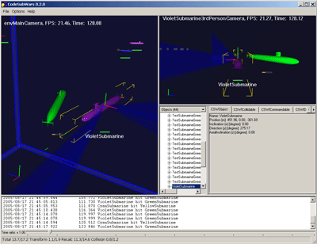

This is a programming game. Here you can define the behaviour of autonomous submarines. The submarines fight against each other in teams or alone with torpedos and mines. The world is 3d and is based on simple physics. To define a submarine behavior the object oriented programming language python is used. Its up to you if they are smart enough to survive. The goal is to create a submarine that is alive at last.
To get an overview of the programming environment the pdf-manual and the html-reference documentation (generated with doxygen) are online accessible.
Keywords: programming game, robot, simulation, artificial intelligence, code wars, physics, python
Any other hints/comments/suggestions are very welcome!

Screenshots of the environment during a battle.
To provide a submarine download section, i need your smart sumarines. Received submarines will be made available to the public with respect to the author.
2007/01/02 - Version 0.4.6 beta released
- new example submarine
- some bugs removed
2006/09/24 - Version 0.4.5 beta released
- new weapons: magnetic mine, passive sonar guided torpedo
- example submarines now uses faster rotation and move commands
- threads can now be used within python
- several major and minor bugs removed
2006/01/21 - Version 0.4.0 beta released
- commands can be implemented in python
- new example submarine
- reference documentation improved
- several minor bugs removed
2005/11/26 - Version 0.3.1 beta released
- serious bug regarding to collision detection fixed
- pylib subfolder introduced that contains useful common python code
2005/09/02 - Version 0.3.0 beta released
- new equipment added: passive sonar
- visualization improved
- new example submarines
- performance improved
- some bugs were fixed
2005/07/29 - Version 0.2.0 beta released
- new equipment added: map
- new silent mode added which has no graphical output
- replaying of battles is now possible
- weapon batteries can now be recharged on weapon supplies
- new basic commands are available: repeat, push, pop
- performance improved
- some bugs were fixed
2005/05/22 - The initial version 0.1.0 beta was released.
Here you can download the latest version (0.4.6b) as a zip file (5.8 Mb). (MD5: 92a02e732b1da39d4c787d746e1711ac; SHA1: cd8db0206516a349b7e3b907ee99e1fb8105856e)
This contains:
- the win32 executable,
- the html-based reference documentation,
- the pdf-manual and
- 14 example submarines.
For installation extract the archive and install python available at www.python.org.
Currently not available.